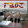

|
|
ROTHKAMM FB03 (E Pluribus Unum)
|
|
| Reason is neither a bone nor an accident |
|
Clash of European Ideologies - Critique of the Critique
Los Angeles - FB03 - a poly-temporal concept album by Rothkamm containing the "only set of CD notes with a glossary"(1) was recently reviewed by the hipper-than-thou print magazine The Wire (London). Although answering the question "does humor belong in music?"(2), a prompt Critique of the Critique was launched by the Rome-based Internet zine Touching Extremes, touching "Über den Begriff der Geschichte".(3) |
|
|
German born, now American based Rothkamm, aka Frank Holger, creates what he calls "supermodern electronic music", of which this is the third installment in a trilogy.
Rothkamm asserts that the three principles of supermodernism are: "1. Be Utopian and Scientific 2. Nod to the First Pioneers. 3. Make full use of Left, Right, and Phantom Channel" However, there are giveaway notes of kitsch frivolity in the highly entertaining sleeve, which sees four shaven headed nerds in brown overcoats standing at odd angles from each other, presumably photoshopped representations of Rothkamm himself.
He also lists among his influences "Immanuel Kant, Karlheinz Stockhausen and Liberace". As for the music, despite its grandly trumpeted claims to be "a critique of the stereophonic illusion", it is essentially a fond revisitation of the pioneering, 50s/60s ear of musique concrete, with nods aplenty to Stockhausen - "Railroad Xing"(4) threatens at one point to mutate into "Gesang Der Jünglinge"(5).
Still, accepted for what it is, it's highly enjoyable, like sneeking in and playing on the old, abandonded Coney Island fairground, frolicking in forgotten futures.(6)
|
| Critique of the Critique |
[massimo Ricci] |
|
Prologue: while reading another review of this work, I had to swallow absurd references to Stockhausen (who nowadays fits anywhere, like Harry Partch and John Cage, when “journalists” don’t have a clue of what they’re talking about) and the “pioneers of musique concrete” (this album was entirely made with a synthesizer, so much for the “concrete”). And while we’re at it, Rothkamm is NOT also known as “Frank Holger”; that’s his NAME (ever heard about Holger Czukay?). I’m used to people spreading the virus of ignorance, but enough is enough.
Ironically, it’s because of characters like Frank Rothkamm that I still have some measure of hope in human intelligence. There’s no comparison between listening to something that smells of “commercial research of the inner self” and instead receiving this man’s promo packets and photos, his mad scientist-like face smiling wryly while one tries to decode the messages contained by his liners and, above all, sonic architectures.
Most likely, many of these suggestions aren’t even comprehensible for a superficial analyst, not only because we’re talking about first-class microtonal developments in multiform isolationist sauce, but also because the wonderfully ironic, but damn true theory behind “E Pluribus Unum” (seriously accepted or not, and I mostly agree with it) contains the germs of true evolution, the one whose basis is still to be grasped by men in their infinite illusion of advancing, while instead they’re rolling back to the starting point.
OK, I know what you’re asking for. What about the music? Electronic soundscapes à la Rothkamm, placed in that galaxy that is proud not to belong to any circle or school of thought. Abstract but precisely sequenced, collecting remnants of phrases that might appear as thrown out randomly by abstruse ungodly machines and were instead generated through a Yamaha FB01 FM Sound Generator that used to belong - of all people - to Blue Oyster Cult’s Buck Dharma and that Frank won on eBay with a $26 bid. Talk about maximum result with minimum effort.
Epilogue: to wrap it all, let’s just say that exercising the brain every once in a while with this stuff wouldn’t be harmful at all; when the saturation level is on red, you can always go back to your Jam Man and loop some obscure “oooh” and “aaah”, or even decide that a friend of yours doing third-rate dub is the next big thing. Now that’s what I call “burial of truth”.(7)
|
|
|
| (1) |
Jay Batzner |
SEQUENZA21 |
2007 |
| (2) |
Frank Zappa |
Does humor belong in music? |
1984 |
| (3) |
Walter Benjamin |
On the Concept of History |
1940 |
| (4) |
Frank Rothkamm |
Eisenbahn Überquerung |
2005 |
| (5) |
Karlheinz Stockhausen |
Gesang Der Jünglinge |
1955 |
| (6) |
David Stubbs |
The Wire (283 - page 68) |
2007 |
| (7) |
Massimo Ricci |
Touching Extremes (September) |
2007 |
|
|
Compact Disc
rothkamm.com
cdemusic.org
downtownmusicgallery.com |
rothkamm
|
Digital Download
iTunes
eMusic
downloads.Walmart.com |
©2007 Flux Records. All Rights Reserved. |
|
|
|
|
|